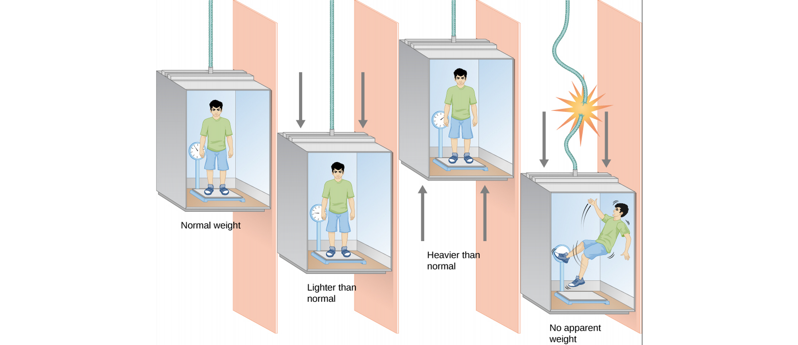
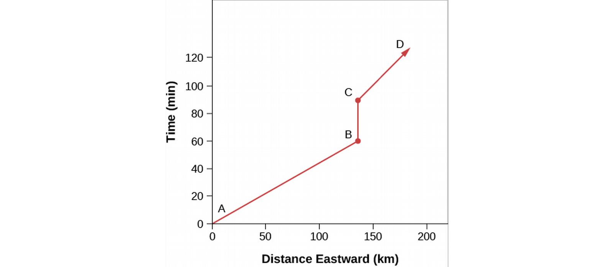

ASTR101 Ch 24-25
Ch 24 - Black Holes and Curved Spacetime
Introducing General Relativity
- Einstein's Equivalence Principle (EP) states that to an observer confined to a reference frame, gravity can't be distinguished from acceleration.

Gravity or Acceleration?
- You throw a ball to your friend horizontally, and it lands at their feet. Are you in an accelerating reference frame, or is it gravity?

The Paths of Light and Matter
- The EP posits that there is no experiment that can discern a stationary frame in gravity from an accelerating frame.
- So the equivalence principle implies that light should curve in a gravitational field. But light goes straight!

Spacetime and Gravity
Linkages: Mass, Space, and Time
- In Newtonian Physics, space and time were separated. An event can be uniquely described by its space (\(x,y,z\)) and time \(t\). That's four independent dimensions.
- Einstein combines space and time in spacetime and illustrates that they are interlinked!
- "Matter tells spacetime how to curve; spacetime tells matter how to move." -John Wheeler.
Spacetime Examples
- A biker travels eastward, his distance eastward is shown as a function of time. The speed limit is 100 km/h.

- An ant walks along a rubber sheet. Its path looks straight to us until we distort the rubber sheet with a paperweight, after which its path looks curved (the ant is going straight!).

Tests of General Relativity
The Motion of Mercury
- General relativity correctly predicts the unnaccounted for precession of Mercury's perihelion (Newtonian mechanics predicts 531 arcsec/century, we observed 574 arcsec/century).

Gravitational Lensing
- Light bends according to the curvature of spacetime, resulting in rings.

Gravity waves, LIGO
Time in General Relativity
- The stronger the gravity, the slower the pace of time. (Time moves more slowly near massive objects).
- This results in gravitational redshift.
- Einstein's theory confirmed to within .1\% when a Viking spacecraft on Mars went behind the Sun as viewed from Earth; its signal slowed according to within .1\% Einstein's theory of general relativity.
- Practical application: GPS, which yields your location based on the time it takes for radio signals to reach your position from different satellites, are so precise that they must take relativity into account. Clocks on satellites tick more slowly than on Earth by 7 millionths of a second per day.
Black Holes
- We observed that the smaller we shrink the diameter of a star, the tighter its gravitational grip at the surface (why is this the case?).
- So, the escape velocity increases as the star shrinks. If it could shrink enough, the escape velocity would be faster than light and nothing could escape it; this is the definition of a black hole.
- Why is it called a black hole?